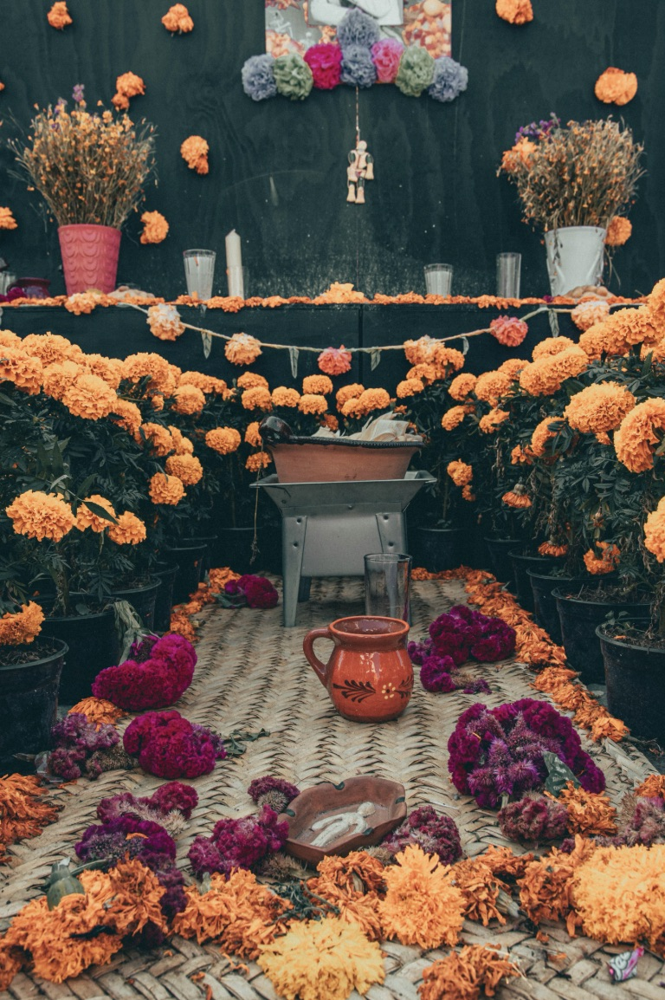
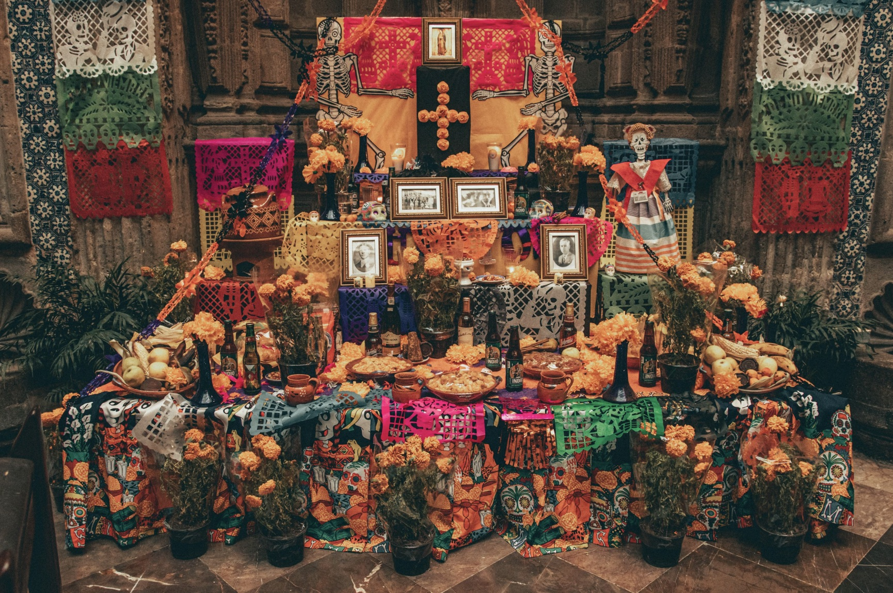
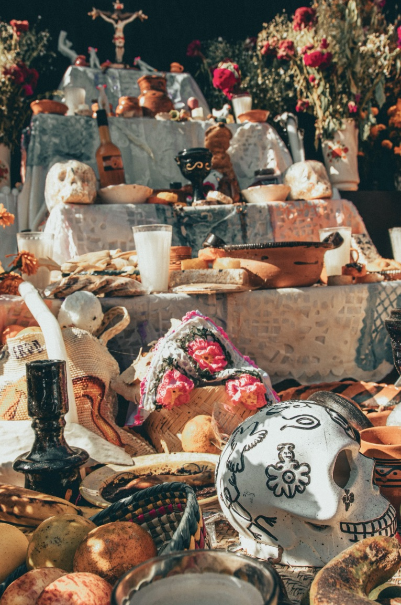

Altars & Religious Imagery

A Living Altar to Honor the Departed Mexican ofrendas, or altars, are a profound element of
the Día de los Muertos (Day of the Dead) celebrations, embodying the nation's rich cultural heritage
and deep familial bonds. These beautifully adorned altars are constructed to honor deceased loved ones,
providing a warm welcome for their souls to return and visit the living. Typically, ofrendas are set up
in homes, cemeteries, and public spaces, reflecting a blend of pre-Hispanic traditions and Catholic
influences. Each altar is a unique creation, often featuring multiple tiers symbolizing the connection between
the earthly realm and the spiritual world, showcasing a harmonious blend of the past and present.

Elements of the Ofrenda: Symbols and Meanings An ofrenda is a vibrant tapestry of symbolic items, each chosen
with care to honor the departed and guide their spirits. Marigolds, known as "cempasúchil," are a staple, their
bright orange petals believed to attract souls with their color and scent. Photographs of the deceased, along
with personal belongings and favorite foods, adorn the altar, evoking cherished memories and creating a sense
of presence. Other essential elements include candles, which represent hope and faith, and copal incense, used
to purify the space and elevate prayers. Pan de muerto (bread of the dead) and sugar skulls are also integral,
symbolizing the cycle of life and death, sweetly celebrating the memory of those who have passed.

A Celebration of Life and Legacy More than a solemn remembrance, the ofrenda is a celebration of life and
legacy, reflecting the belief that death is a natural part of existence. During the festivities, families
gather to share stories, music, and food, creating an atmosphere of joy and reverence. The vibrant colors,
intricate papel picado (paper cutouts), and lively decorations convey a message of love and continuity, affirming
that the departed remain a cherished part of the community. Through the ofrenda, Mexican culture beautifully
expresses a philosophy of acceptance and celebration, transforming mourning into an opportunity to honor and
reconnect with the essence of those who came before.